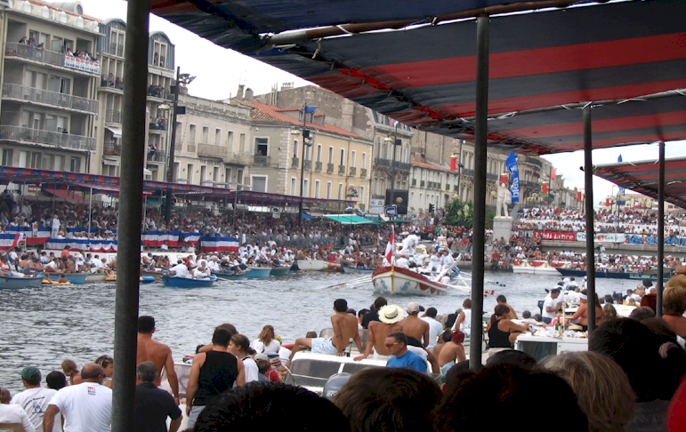
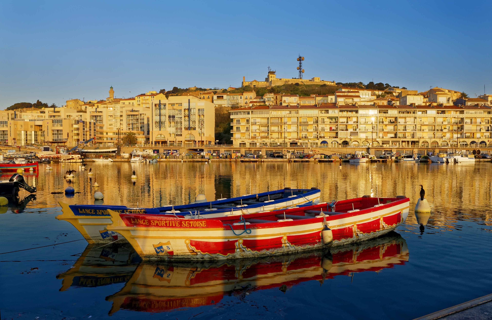
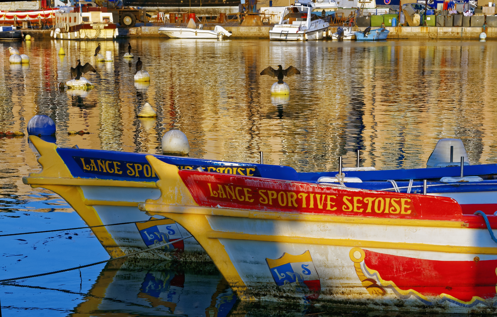
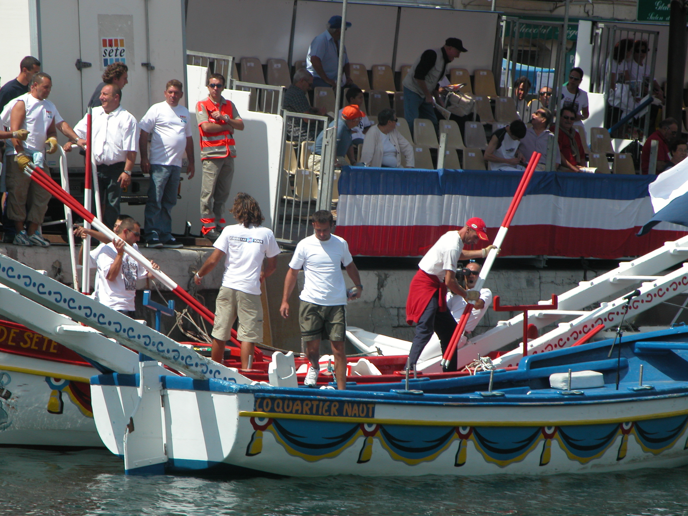
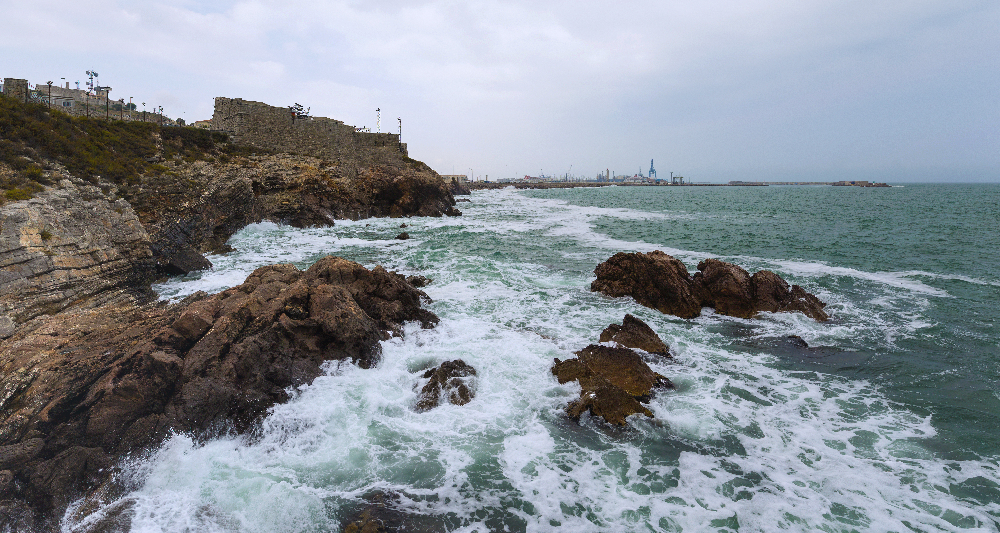
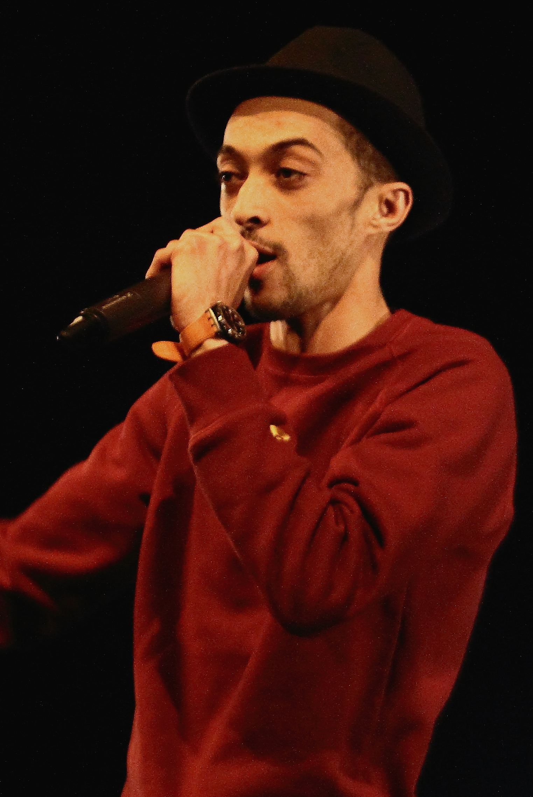

Sète & Ses Joutes en Images Réelles
Photographies patrimoniales et de compétitions au cœur du Cadre Royal et des canaux de Sète (cliquez pour agrandir).

⚔️ En plein chocLe Choc des Lances (Cadre Royal)
Combat au sommet de la tintaine lors de la mythique Fête de la Saint-Louis à Sète.

🛶 EmbarcationsLes Barques au Lever du Jour
La Rouge et la Bleue amarrées dans le port de Sète avant l'effervescence du tournoi.

📐 StructureGros Plan : La Bigue & La Tintaine
L'échafaudage en bois arrière et le plancher haut culminant au-dessus du canal.

⚔️ Les ArmesLes Lances & Tenue Blanche
Contrôle technique et armement des lances de 2,80 m par les jouteurs sétois.
Le Cadre Royal de Sète (L'Arène Maritime)
Le cœur battant de Sète où s'affrontent les générations d'ajustaïres depuis plus de 350 ans.
Comprendre en 2 minutes
Le Duel d'une Passe : Étape par Étape
Deux barques lourdes s'affrontent sur l'eau. Le principe est limpide : faire tomber l'adversaire à l'eau sans tricher ni tomber soi-même.
L'Élan et La Charge
Les deux barques (la Rouge et la Bleue) sont propulsées par 8 à 10 rameurs. Les musiciens à la proue jouent l'air sacré du hautbois et du tambour : « La Charge ».
La Posture de Combat
Perché sur la tintaine à près de 3m au-dessus de l'eau, le jouteur adopte la fente avant. Le lourd pavois (bouclier) est collé au torse et au genou, la lance de 2,80m bloquée sous l'aisselle.
Le Choc Frontal
Au croisement des pavillons, le crampon d'acier à 3 pointes (l'épure) percute violemment le pavois adverse dans la zone centrale autorisée. L'impact est colossal : les lances cintrent ou se brisent !
Le Verdict de l'Eau
Le jouteur qui désarçonne son adversaire et le fait plonger dans le canal remporte la passe. Si les deux tombent ensemble, c'est le « bouquet » : les deux sont éliminés !
Dispositif & Équipage
Anatomie de la Barque Traditionnelle
Une barque de joute (type mourre de porc) pèse lourd et abrite un équipage ultra-synchronisé de 15 à 18 personnes.
La Barque Rouge La Poncha (Pointe-Courte)
Mesure environ 8 m sur 2,20 m. Elle embarque un contrepoids avant indispensable de 600 kg pour équilibrer la bigue arrière lors de la poussée des jouteurs.
La Tintaine & La Bigue
La bigue est l'escalier en bois à l'arrière où 4 à 5 jouteurs se placent en attente pour régler l'assiette du bateau.
- Perché à 2,50 m - 3,00 m au-dessus de l'eau
- Surface antidérapante
- Interdiction formelle de toucher le sol de la main ou du genou
La Barque Bleue Lo Quartier Naut (Quartier Haut)
Jumelle parfaite de la rouge, vêtue de bleu ciel et blanc. Les deux barques doivent impérativement présenter leurs planchers à la même hauteur absolue grâce aux poids répartis sur la bigue.
Code FFJSN
Règles Officielles, Fautes & Disqualifications
La joute languedocienne est un sport codifié avec une rigueur absolue pour assurer la sécurité et l'équité des passes.
Disqualifications Directes
Faute MajeureCes infractions entraînent l'exclusion immédiate du tournoi :
- ✕ Lance courte : Ne pas garder la base de la lance coincée sous l'aisselle à l'impact.
- ✕ Passer la 2ème garde : Laisser glisser la main jusqu'à masquer la zone blanche de la lance.
- ✕ Double frappe : Recharger sa lance pour donner un 2ème coup après l'impact initial.
- ✕ Faire tomber en avant : Relâcher délibérément la poussée pour attirer l'adversaire dans le vide.
- ✕ Frappe hors zone : Piquer en dehors de la demi-surface centrale du pavois.
Passe Perdue / Élimination
Chute & ContactsLe jouteur perd son combat sans faute antisportive :
- ! Chute à l'eau : Toucher l'eau du canal (même le bout du pied).
- ! Contact avec le plancher : Poser la main, le genou ou le pavois au sol pour garder l'équilibre.
- ! Pied sur la planche de devant : Mettre le pied sur le rebord avant du plancher.
- ! Lâcher d'arme : Faire tomber sa lance ou son pavois de ses mains.
- ! Bouquet : Si les deux tombent ensemble, les deux sont éliminés !
Format d'un Tournoi
CompétitionLes différentes étapes d'une journée de joutes :
Chaque jouteur doit faire tomber 3 adversaires (2 pour les juniors) pour obtenir son ticket pour les revanches.
Tournoi à élimination directe. Une seule passe par tour jusqu'à la grande finale.
Vainqueur (1er Prix) = 20 pts, 2e Prix = 12 pts, 3e/4e = 8 pts, Qualifié revanches = 4 pts.
Programme 2026, Championnat & Parcours du Vainqueur
Découvrez le calendrier officiel jour par jour, le barème du Championnat de Ligue FFJSN et l'épopée héroïque de Valentin Casenove, vainqueur de la Saint-Louis 2026.
Valentin Casenove
Société : Lance Amicale Sétoise (LAS) • 1er Titre Suprême
Considéré comme un outsider au début de la compétition réunissant les colosses du Midi, Valentin Casenove a écrit une page légendaire des joutes sétoises. Au terme d'une journée folle interrompue pendant plus de 2 heures par un violent orage méditerranéen, il a dominé le Cadre Royal et s'est imposé en finale face à Thibaut Lognos (Agde) dès la première passe !
Le Parcours Héroïque Passe par Passe :
Fait tomber successivement ses 3 adversaires de l'après-midi grâce à une fente avant d'acier. Il valide son ticket direct pour les Revanches.
Vers 18h, un orage diluvien s'abat sur Sète. Le Cadre Royal est évacué. Le tournoi reprend à 20h30 sous les projecteurs et les vivats du public trempé mais fidèle !
Face aux cadors des poids lourds, il enchaîne les passes sans trembler, cintre sa lance au millimètre et décroche sa place en finale suprême.
Face à Thibaut Lognos (Agde). Choc monumental au son du hautbois : Lognos plonge dans le canal ! Valentin Casenove est sacré Champion !
Le Programme Officiel de la Saint-Louis 2026
Les 7 jours de ferveur et de compétitions du mercredi 19 au mardi 25 août 2026
Ouverture Officielle
19h30 : Cérémonie d'ouverture à La Placette (Place Léon Blum) et départ du Grand Prix cycliste de la Saint-Louis.
Chariots & Féminines
18h : Tournoi sur chariots pour les tout-petits (3-8 ans). 21h15 : 19e Tournoi de la Presse, personnalités et joutes féminines.
Jeunes & Coupe d'Or
14h30 : Tournoi des jeunes jouteurs au Cadre Royal. 21h : Coupe d'Or « Challenge Gaston Macone » en nocturne.
Mi-Moyens & Pyromélodie
14h : Tournoi des Mi-Moyens. 22h30 : Grand spectacle pyromélodique « Incandescences Sète » dans le port.
Juniors & Moyens
14h30 : Grands tournois des Juniors (jusqu'à 20 ans) et des Moyens (≤ 90 kg), prélude au grand choc du lundi.
Grand Tournoi des Poids Lourds
14h30 : Défilé en blanc dans la ville puis tournoi des Lourds au Cadre Royal. Le vainqueur 2026 est Valentin Casenove (LAS).
Clôture & Feu d'Artifice
22h : Grand feu d'artifice de clôture tiré depuis le brise-lames face à la baie de Sète.
Le Système de Points du Championnat de Ligue
Réglement officiel FFJSN régissant les tournois tout au long de la saison
Barème Officiel par Tournoi :
| Résultat au Tournoi | Seniors / Lourds | Juniors |
|---|---|---|
| 🥇 1er Prix (Vainqueur) | 20 pts | 20 pts |
| 🥈 2ème Prix (Finaliste) | 12 pts | 12 pts |
| 🥉 3ème & 4ème Prix (Demi-finales) | 8 pts | 8 pts |
| 🎟️ Qualifié pour les Revanches | 4 pts | 4 pts |
| ⚔️ Vainqueur de 2 hommes (éliminatoires) | 2 pts | — |
| ⚔️ Vainqueur de 1 homme (éliminatoires) | 1 pt | 1 pt |
Pénalité société : -20 points si un juré est absent sans remplaçant.
Simulateur de Score de Championnat
Sélectionnez la performance d'un jouteur pour calculer ses points de Ligue :
Championnat de Ligue & Gestion du Programme
Classement officiel des jouteurs, programme par étape et importateur de nouveaux programmes.
| Rang | Jouteur (Nom & Prénom) | Société & Ville d'Origine | Catégorie | Victoires | Passes | Points |
|---|
Calendrier Officiel des Tournois & Engagements
Consultez les étapes de la saison, les vainqueurs et les listes de jouteurs engagés.
Dès que vous avez un nouveau programme (fichier ou texte), chargez-le ici. Vous pouvez soit choisir un fichier (JSON, CSV ou TXT), soit copier-coller directement votre liste de participants. En cliquant sur Valider et Actualiser, la page se met à jour immédiatement et sauvegarde vos données sur votre téléphone !
Option A : Téléverser un fichier
Formats acceptés : .json, .csv ou .txt
✍️ Option B : Copier-Coller Direct
Texte ou JSONSuivre les Joutes en Direct Vidéo & Radio
Lorsque les tournois battent leur plein sur le Cadre Royal, plusieurs canaux officiels retransmettent l'intégralité des passes en direct multicaméras.
Grand Tournoi des Lourds — Ville de Sète & Décibel Event
Replay intégral des passes, ralentis multicaméras et sacre sous l'orage
Les Canaux de Diffusion Officiels :
YouTube — Ville de Sète
Live Vidéo ↗Le flux officiel de référence. Toutes les passes commentées par les spécialistes sétois avec prises de vue aériennes.
viàOccitanie & France 3
TNT & Web ↗Diffusion télévisée régionale sur la TNT (Canal 31/33), les box internet et en streaming sur france.tv.
RSL — La Radio des Joutes
Audio Live ↗Suivez le direct radio avec les clameurs du Cadre Royal, la musique du hautbois et les annonces des jurés.
Revoir la Rediffusion Intégrale de la Saint-Louis 2026
Revivez l'intégralité du Grand Tournoi des Lourds du lundi 24 août 2026 sur le Cadre Royal : l'entrée des barques, les éliminatoires, l'épisode héroïque de l'orage qui a stoppé les joutes pendant 2h, et la passe décisive sacrant Valentin Casenove face à Thibaut Lognos !
Parler Sétois & Maîtriser le Vocabulaire
Le Dictionnaire des « Mots Riches » des Joutes
Recherchez ou filtrez tous les termes traditionnels, leur étymologie occitane et leur explication simple.
Choisissez Votre Défi Sétois
De l'amateur poli au jouteur aguerri, mesurez votre savoir face aux 3 niveaux de l'Île Singulière !
Sétois de Courtoisie
Les bases indispensables pour apprécier un tournoi et comprendre l'essentiel sans faire d'impair.
Sétois Téméraire
Règles fédérales FFJSN complètes, arbitrage, barèmes de points, lances courtes et tactique de fente.
Sétois Pur Souche
Le graal absolu ! Patois occitan, argot de Sète, secrets de la Saint-Louis, légendes et anecdotes de l'étang.
Les Deux Festivals Majeurs de Sète
En marge des joutes sacrées, Sète s'embrase chaque été avec deux événements d'envergure internationale célébrés au Théâtre de la Mer face aux vagues.

🔍 AgrandirLe Théâtre de la Mer Jean Vilar
Ancien fort défensif du XVIIIe siècle surplombant la falaise, ce joyau architectural offre une acoustique magique et une proximité unique entre artistes et festivaliers au son du ressac méditerranéen.
Worldwide Festival Sète
Jazz, Soul, Funk, Hip-Hop, Broken Beat & Électro
Inspiré de l'émission culte de la BBC, le festival fait de la cité maritime son terrain de jeu musical. Des après-midis sur les plages aux nuits étoilées du Théâtre de la Mer, il incarne l'art de vivre sétois entre dégustations de tielles et découvertes sonores d'avant-garde.
L'édition se tient chaque début juillet. Les dates officielles et l'ouverture de la billetterie ne sont pas encore mises en ligne à ce jour.

🎤 Rap Indépendant & Culture Hip-Hop Créé par Demi Portion (depuis 2016)Le Demi Festival
Le rendez-vous roi du Hip-Hop indépendant à taille humaine
Porté avec ferveur par l'enfant de Sète Demi Portion, ce festival défend des valeurs de partage, de proximité et de prix abordables. Il réunit toutes les légendes du rap (Oxmo Puccino, Fonky Family, JoeyStarr, Hugo TSR...) avec un grand concert populaire gratuit sur le port.
Après la 10ème édition anniversaire d'août 2026, les prochaines dates ne sont pas encore officialisées. Restez à l'affût dès l'ouverture des préventes.
L'Annuaire Vivant de Sète & de la Lagune
Explorez les meilleures activités nautiques, écoles de voile, balades en kayak au milieu des tables conchylicoles et dégustations d'huîtres à Sète, Bouzigues, Mèze, Frontignan, Balaruc-les-Bains et Marseillan.